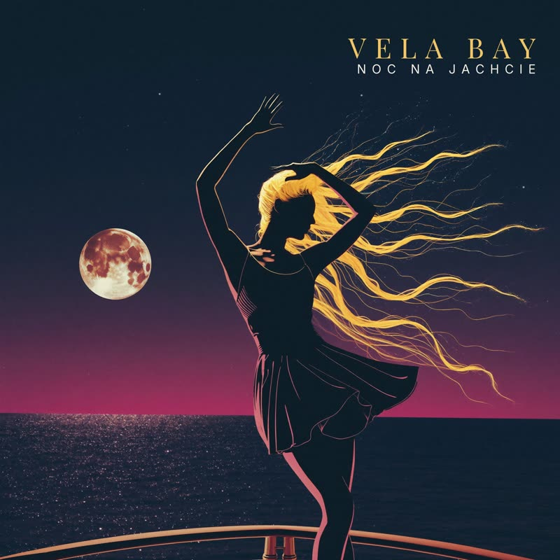

Muzyka

Premiera 24.07.2026
Noc na jachcie
Debiutancki singiel. Noc, pokład i groove, który nie pyta o zgodę.
Wkrótce na Spotify · Apple Music · YouTube
Premiera 31.07.2026
Yacht Nights
Anglojęzyczny bliźniak nocy na pokładzie — balearskie saksofony na pełnym morzu.
Wkrótce na Spotify · Apple Music · YouTubeIII
Sierpień 2026
Singiel #3
Królowa już wchodzi na pokład. Cały jacht to wie.
W produkcji
Znajdź nas